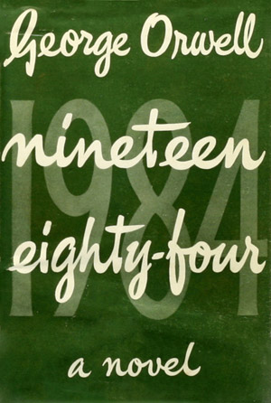
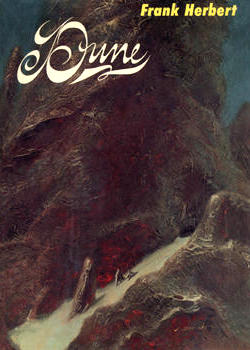
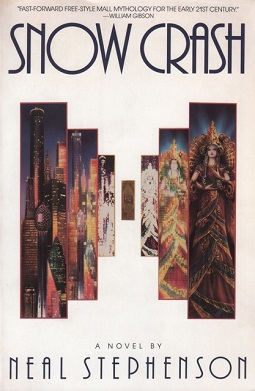

-

Published: 8 June 19491984 is a dystopian novella by George Orwell published in 1949, which follows the life of Winston Smith, a low ranking member of 'the Party', who is frustrated by the omnipresent eyes of the party, and its ominous ruler Big Brother. 'Big Brother' controls every aspect of people's lives.
-

Published: August 1, 19651984 is a dystopian novella by George Orwell published in 1949, which follows the life of Winston Smith, a low ranking member of 'the Party', who is frustrated by the omnipresent eyes of the party, and its ominous ruler Big Brother. 'Big Brother' controls every aspect of people's lives.
-
 Published: 19891984 is a dystopian novella by George Orwell published in 1949, which follows the life of Winston Smith, a low ranking member of 'the Party', who is frustrated by the omnipresent eyes of the party, and its ominous ruler Big Brother. 'Big Brother' controls every aspect of people's lives.
Published: 19891984 is a dystopian novella by George Orwell published in 1949, which follows the life of Winston Smith, a low ranking member of 'the Party', who is frustrated by the omnipresent eyes of the party, and its ominous ruler Big Brother. 'Big Brother' controls every aspect of people's lives. -
.jpg) Published: 1 July 19841984 is a dystopian novella by George Orwell published in 1949, which follows the life of Winston Smith, a low ranking member of 'the Party', who is frustrated by the omnipresent eyes of the party, and its ominous ruler Big Brother. 'Big Brother' controls every aspect of people's lives.
Published: 1 July 19841984 is a dystopian novella by George Orwell published in 1949, which follows the life of Winston Smith, a low ranking member of 'the Party', who is frustrated by the omnipresent eyes of the party, and its ominous ruler Big Brother. 'Big Brother' controls every aspect of people's lives. -

Published: June 19921984 is a dystopian novella by George Orwell published in 1949, which follows the life of Winston Smith, a low ranking member of 'the Party', who is frustrated by the omnipresent eyes of the party, and its ominous ruler Big Brother. 'Big Brother' controls every aspect of people's lives.
-
 Published: 19691984 is a dystopian novella by George Orwell published in 1949, which follows the life of Winston Smith, a low ranking member of 'the Party', who is frustrated by the omnipresent eyes of the party, and its ominous ruler Big Brother. 'Big Brother' controls every aspect of people's lives.
Published: 19691984 is a dystopian novella by George Orwell published in 1949, which follows the life of Winston Smith, a low ranking member of 'the Party', who is frustrated by the omnipresent eyes of the party, and its ominous ruler Big Brother. 'Big Brother' controls every aspect of people's lives.